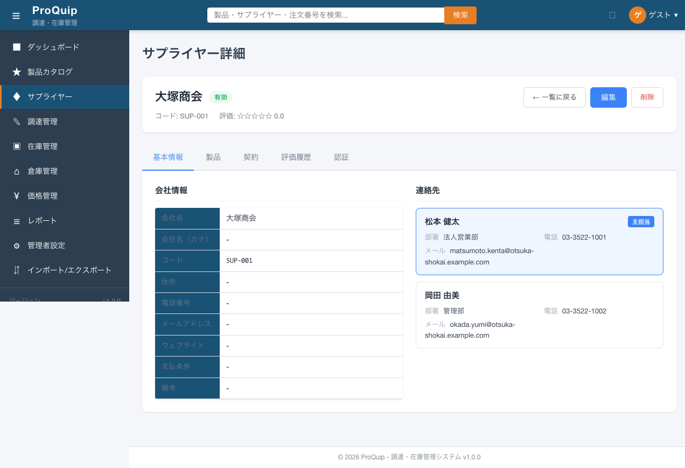
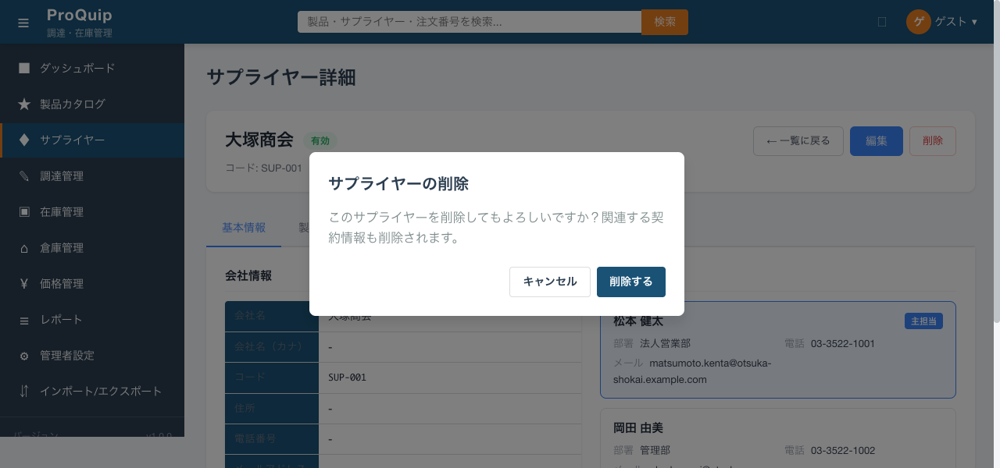
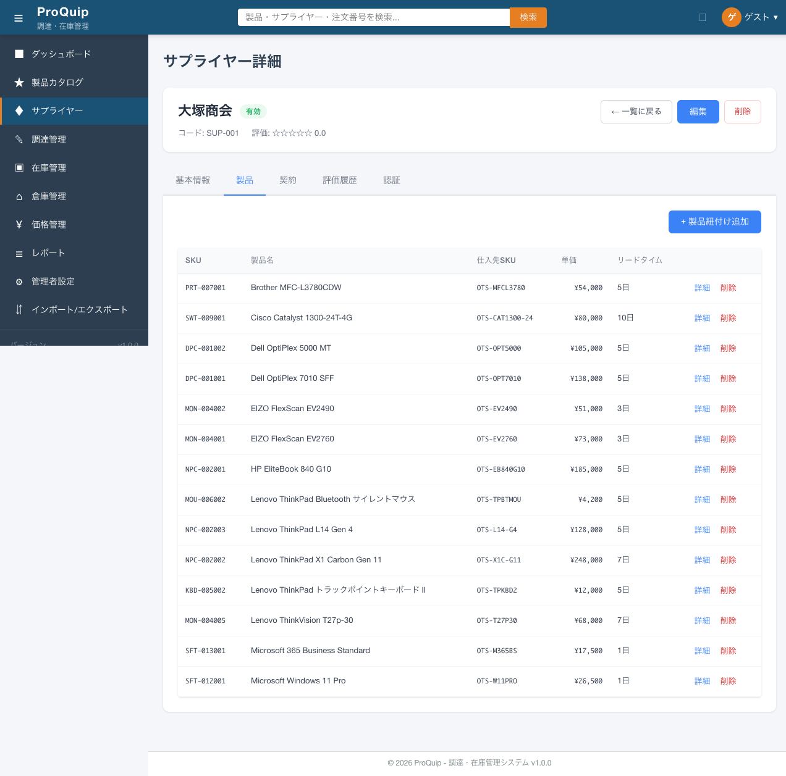
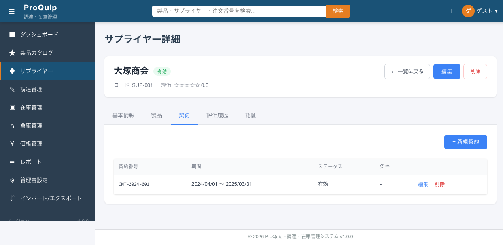
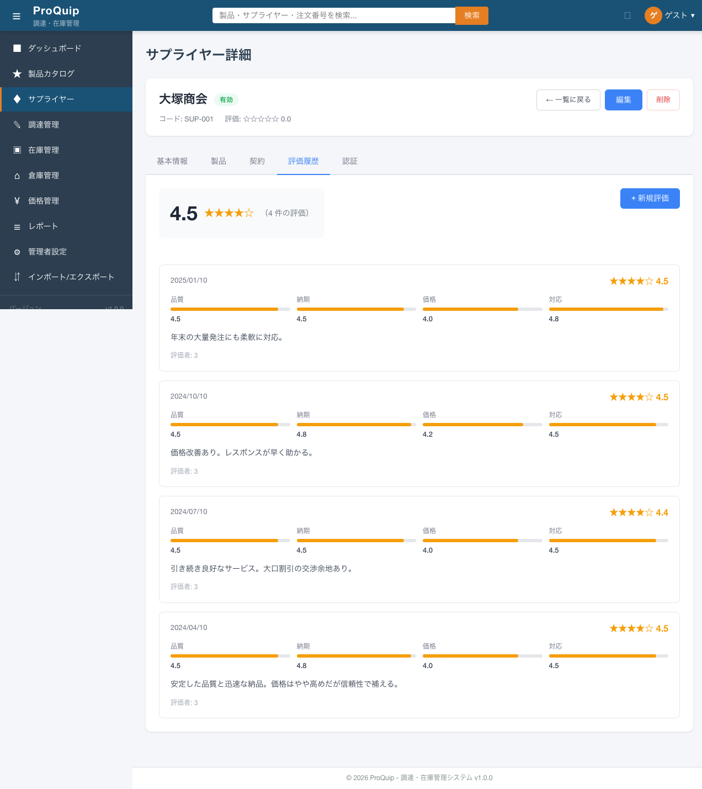
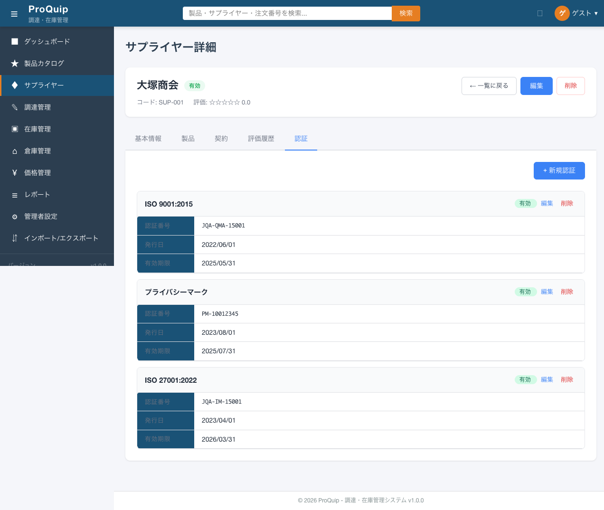

サプライヤー詳細画面のヘッダ部。ページタイトル「サプライヤー詳細」、会社名、ステータスバッジ、コード、評価を表示。
screenshots/F-04/F-04-02-001_supplier-detail_initial.png

サプライヤー詳細画面のヘッダ領域。ページタイトル（h1, app-page-header）、会社名（h2）、ステータスバッジ（app-status-badge）、サプライヤーコード、評価（星+数値）を表示する。
画面上部でサプライヤーの基本識別情報（名前・ステータス・コード・評価）を一目で把握できるようにするため。
| 項目名 | 表示条件 | 値の取得元 | 備考 |
|---|---|---|---|
| ページタイトル | 常時 | 固定文字列 | 「サプライヤー詳細」（h1, app-page-header） |
| 会社名 | 常時 | API: supplier.name | h2要素。例: 「大塚商会」 |
| ステータスバッジ | 常時 | API: supplier.status | app-status-badge。例: 「有効」「停止中」 |
| コード | 常時 | API: supplier.code | 「コード: SUP-001」形式 |
| 評価 | 常時 | API: supplier.rating | 「評価: ☆☆☆☆☆ 0.0」（星5つ+数値） |
| 操作名 | トリガー | 実行内容 | 正常時の結果 | 異常時の結果 | 状態変化 |
|---|---|---|---|---|---|
| - | - | - | - | - | - |
ページロード時にGET /api/suppliers/{id}でサプライヤー情報を取得し、ヘッダ領域に会社名・ステータスバッジ・コード・評価を表示する。例: 大塚商会（SUP-001）の場合、会社名「大塚商会」、ステータス「有効」、コード「SUP-001」、評価「☆☆☆☆☆ 0.0」。
APIエラーの場合、画面表示されない（エラーハンドリングの詳細は未確認）。
なし。全ロールで表示可能（BE側に@RolesAllowed未設定）。
なし。表示専用。
| API ID | method | path | request | response | error response | 根拠 |
|---|---|---|---|---|---|---|
| - | GET | /api/suppliers/{id} | - | {id, code, name, status, rating, email, phone} | - | Network通信観測・ソースコード |
| ファイルパス | 関数/クラス/メソッド名 | 確認内容 |
|---|---|---|
| proquip-frontend/src/app/features/suppliers/supplier-detail/supplier-detail.component.ts | ngOnInit(), loadSupplier() | GET /api/suppliers/{id}の呼び出しとヘッダ表示データのバインド |
| proquip-frontend/src/app/features/suppliers/supplier-detail/supplier-detail.component.html | ヘッダ領域 | app-page-header, h2, app-status-badge, コード・評価表示 |
| proquip-frontend/src/app/shared/services/supplier.service.ts | getSupplier(id) | GET /api/suppliers/{id} |
| proquip-frontend/src/app/shared/models/supplier.model.ts | Supplier interface | FEモデル定義 |
撮影条件: SUP-001（大塚商会）の詳細画面初期表示 ／ 備考: ステータス「有効」、評価「0.0」表示
screenshots/F-04/F-04-02-001_supplier-detail_initial.png
High
ヘッダ部に配置された「← 一覧に戻る」ボタン。
screenshots/F-04/F-04-02-001_supplier-detail_initial.png
サプライヤー一覧画面（/suppliers）へ戻るナビゲーションボタン。ラベルは「← 一覧に戻る」。
詳細画面から一覧画面に素早く戻れるようにするため。
| 操作名 | トリガー | 実行内容 | 正常時の結果 | 異常時の結果 | 状態変化 |
|---|---|---|---|---|---|
| 一覧に戻る | ボタンクリック | /suppliers へ遷移 | サプライヤー一覧画面表示 | - | ページ遷移 |
ボタンクリックで /suppliers に遷移し、サプライヤー一覧画面が表示される。
なし（常にクリック可能）。
なし。全ロールで利用可能。
なし。常時enabled。
| ファイルパス | 関数/クラス/メソッド名 | 確認内容 |
|---|---|---|
| proquip-frontend/src/app/features/suppliers/supplier-detail/supplier-detail.component.ts | goBack() | router.navigate(['/suppliers']) |
| proquip-frontend/src/app/features/suppliers/supplier-detail/supplier-detail.component.html | 「← 一覧に戻る」ボタン | クリックイベントでgoBack()呼び出し |
High
ヘッダ部に配置された「編集」ボタン。
screenshots/F-04/F-04-02-001_supplier-detail_initial.png
サプライヤー編集画面（/suppliers/{id}/edit）へ遷移するボタン。
サプライヤーの基本情報を編集するため。
| 操作名 | トリガー | 実行内容 | 正常時の結果 | 異常時の結果 | 状態変化 |
|---|---|---|---|---|---|
| 編集画面遷移 | ボタンクリック | /suppliers/{id}/edit へ遷移 | サプライヤー編集画面表示 | - | ページ遷移 |
ボタンクリックで /suppliers/{id}/edit に遷移し、サプライヤー編集画面が表示される。
なし（常にクリック可能）。
現在は全ロールでボタンが表示・クリック可能。BE側にも@RolesAllowed未設定。
なし。常時enabled。
| ファイルパス | 関数/クラス/メソッド名 | 確認内容 |
|---|---|---|
| proquip-frontend/src/app/features/suppliers/supplier-detail/supplier-detail.component.ts | editSupplier() | router.navigate(['/suppliers', id, 'edit']) |
| proquip-frontend/src/app/features/suppliers/supplier-detail/supplier-detail.component.html | 「編集」ボタン | クリックイベントでeditSupplier()呼び出し |
High
ヘッダ部に配置された「削除」ボタン。クリックで確認ダイアログを表示。
screenshots/F-04/F-04-02-004_delete-confirm.png

サプライヤーを削除するボタン。クリックすると確認ダイアログが表示され、確認後にDELETE APIを呼び出してサプライヤーを削除する。
不要になったサプライヤー情報をシステムから削除するため。誤削除防止のため確認ダイアログを挟む。
| 操作名 | トリガー | 実行内容 | 正常時の結果 | 異常時の結果 | 状態変化 |
|---|---|---|---|---|---|
| 削除確認ダイアログ表示 | 「削除」ボタンクリック | 確認ダイアログを表示。タイトル: 「サプライヤーの削除」、メッセージ: 「このサプライヤーを削除してもよろしいですか？関連する契約情報も削除されます。」、ボタン: 「キャンセル」/「削除する」 | 確認ダイアログ表示 | - | モーダル表示 |
| 削除実行 | 確認ダイアログの「削除する」ボタンクリック | DELETE /api/suppliers/{id} を呼び出し | /suppliers へ遷移（一覧に戻る） | 「サプライヤーの削除に失敗しました。」エラーメッセージ表示 | ページ遷移（成功時） |
| 削除キャンセル | 確認ダイアログの「キャンセル」ボタンクリック | ダイアログを閉じる | 元の詳細画面に戻る | - | モーダル非表示 |
「削除」ボタンクリック → 確認ダイアログ表示 → 「削除する」クリック → DELETE /api/suppliers/{id} 成功 → /suppliers へ遷移。
DELETE API失敗時、「サプライヤーの削除に失敗しました。」エラーメッセージが表示される。
現在は全ロールでボタンが表示・クリック可能。BE側にも@RolesAllowed未設定。
削除成功時、サプライヤーがシステムから削除され、一覧画面に遷移する。
| API ID | method | path | request | response | error response | 根拠 |
|---|---|---|---|---|---|---|
| - | DELETE | /api/suppliers/{id} | - | 204 No Content | エラーレスポンス | ソースコード: SupplierResource.java |
| ファイルパス | 関数/クラス/メソッド名 | 確認内容 |
|---|---|---|
| proquip-frontend/src/app/features/suppliers/supplier-detail/supplier-detail.component.ts | deleteSupplier() | 確認ダイアログ表示 → DELETE API呼び出し → /suppliers遷移 |
| proquip-frontend/src/app/features/suppliers/supplier-detail/supplier-detail.component.html | 「削除」ボタン | クリックイベントでdeleteSupplier()呼び出し |
| proquip-frontend/src/app/shared/services/supplier.service.ts | deleteSupplier(id) | DELETE /api/suppliers/{id} |
| proquip-web/src/main/java/com/proquip/web/resource/SupplierResource.java | deleteSupplier() | DELETE /api/suppliers/{id}エンドポイント |
撮影条件: 削除ボタンクリック後の確認ダイアログ ／ 備考: 「サプライヤーの削除」ダイアログ表示
screenshots/F-04/F-04-02-004_delete-confirm.png
High
タブ「基本情報」（activeTab === 0）選択時の会社情報セクション。テーブル形式でサプライヤーの詳細情報を表示。
screenshots/F-04/F-04-02-001_supplier-detail_initial.png
5つのタブ（基本情報/製品/契約/評価履歴/認証）のうちindex=0のタブ。「会社情報」セクション（h4）でサプライヤーの詳細情報をテーブル形式で表示する。
サプライヤーの基本属性情報（会社名、住所、連絡先、支払条件等）を確認するため。
| 項目名 | 表示条件 | 値の取得元 | 備考 |
|---|---|---|---|
| 会社名 | 常時 | API: supplier.name | 例: 「大塚商会」 |
| 会社名（カナ） | 常時 | API: supplier.nameKana | APIレスポンスに含まれないため常に「-」表示 |
| コード | 常時 | API: supplier.code | 例: 「SUP-001」 |
| 住所 | 常時 | API: supplier.address | APIレスポンスに含まれないため常に「-」表示 |
| 電話番号 | 常時 | API: supplier.phone | 例: 「03-1234-5678」 |
| メールアドレス | 常時 | API: supplier.email | 例: 「info@otsuka.co.jp」 |
| ウェブサイト | 常時 | API: supplier.website | APIレスポンスに含まれないため常に「-」表示。値がある場合はリンク表示。 |
| 支払条件 | 常時 | API: supplier.paymentTerms | APIレスポンスに含まれないため常に「-」表示 |
| 備考 | 常時 | API: supplier.notes | APIレスポンスに含まれないため常に「-」表示 |
| 操作名 | トリガー | 実行内容 | 正常時の結果 | 異常時の結果 | 状態変化 |
|---|---|---|---|---|---|
| タブ切替 | 「基本情報」タブクリック | activeTab = 0 に設定 | 基本情報タブの内容を表示 | - | activeTabが0に変化 |
基本情報タブ（デフォルト選択）で「会社情報」セクションにサプライヤーの属性情報がテーブル形式で表示される。値が存在しないフィールドは「-」で表示（|| '-' フォールバック）。
API取得失敗の場合、表示されない。
なし。全ロールで表示可能。
初期表示時はこのタブが選択された状態。他タブからの切替で表示。
| API ID | method | path | request | response | error response | 根拠 |
|---|---|---|---|---|---|---|
| - | GET | /api/suppliers/{id} | - | {id, code, name, status, rating, email, phone} | - | Network通信観測・ソースコード |
| ファイルパス | 関数/クラス/メソッド名 | 確認内容 |
|---|---|---|
| proquip-frontend/src/app/features/suppliers/supplier-detail/supplier-detail.component.html | 基本情報タブ領域（activeTab === 0） | 「会社情報」セクション（h4）とテーブル表示 |
| proquip-frontend/src/app/features/suppliers/supplier-detail/supplier-detail.component.ts | activeTab, loadSupplier() | タブ状態管理とデータロード |
| proquip-frontend/src/app/shared/models/supplier.model.ts | Supplier interface | nameKana, address, website, paymentTerms, notesフィールド定義 |
High
基本情報タブ内の「連絡先」セクション（h4）。コンタクトカードをリスト表示。
screenshots/F-04/F-04-02-001_supplier-detail_initial.png
基本情報タブ（activeTab === 0）内の「連絡先」セクション。サプライヤーに紐づく担当者の連絡先情報をカード形式で表示する。
サプライヤーの担当者連絡先を一覧で確認し、コミュニケーションを円滑にするため。
| 項目名 | 表示条件 | 値の取得元 | 備考 |
|---|---|---|---|
| 担当者名 | 常時 | API: contact.name | 例: 「松本 健太」 |
| 主担当タグ | isPrimary === true | API: contact.isPrimary | 「主担当」バッジ表示 |
| 部署 | 常時 | API: contact.department | 例: 「営業部」 |
| 役職 | 値がある場合 | API: contact.position | 値がない場合は非表示 |
| 電話番号 | 常時 | API: contact.phone | 例: 「03-1234-5678」 |
| メールアドレス | 常時 | API: contact.email | 例: 「matsumoto@otsuka.co.jp」 |
| 操作名 | トリガー | 実行内容 | 正常時の結果 | 異常時の結果 | 状態変化 |
|---|---|---|---|---|---|
| - | - | -（表示専用） | - | - | - |
GET /api/suppliers/{id}/contactsでコンタクト情報を取得し、カード形式で表示。SUP-001の場合、松本 健太（主担当）と岡田 由美の2件が表示される。
連絡先が0件の場合、「連絡先は登録されていません」と空状態メッセージ（app-empty-state）が表示される。
なし。全ロールで表示可能。
なし。表示専用。
| API ID | method | path | request | response | error response | 根拠 |
|---|---|---|---|---|---|---|
| - | GET | /api/suppliers/{id}/contacts | - | [{id, supplierId, name, department, position, phone, email, isPrimary}] | - | Network通信観測・ソースコード |
| ファイルパス | 関数/クラス/メソッド名 | 確認内容 |
|---|---|---|
| proquip-frontend/src/app/features/suppliers/supplier-detail/supplier-detail.component.html | 連絡先セクション（activeTab === 0内） | コンタクトカードのレンダリング、isPrimaryによる「主担当」バッジ表示 |
| proquip-frontend/src/app/features/suppliers/supplier-detail/supplier-detail.component.ts | loadContacts() | GET /api/suppliers/{id}/contacts の呼び出し |
| proquip-frontend/src/app/shared/services/supplier.service.ts | getSupplierContacts(id) | GET /api/suppliers/{id}/contacts |
| proquip-web/src/main/java/com/proquip/web/resource/SupplierResource.java | getSupplierContacts() | GET /api/suppliers/{id}/contacts エンドポイント |
High
タブ「製品」（activeTab === 1）選択時。サプライヤーに紐づく製品をテーブル表示。
screenshots/F-04/F-04-02-007_products-tab.png

サプライヤーに紐づく取扱製品を一覧表示するタブ（activeTab === 1）。テーブル形式でSKU・製品名・仕入先SKU・単価・リードタイムを表示し、製品紐付けの追加・削除が可能。
サプライヤーが取り扱う製品の情報（価格・リードタイム等）を確認し、製品との紐付けを管理するため。
| 項目名 | 表示条件 | 値の取得元 | 備考 |
|---|---|---|---|
| SKU | 常時 | API: sp.productSku | 製品のSKUコード |
| 製品名 | 常時 | API: sp.productName | 製品の表示名 |
| 仕入先SKU | 常時 | API: sp.supplierSku | サプライヤー側のSKUコード |
| 単価 | 常時 | API: sp.unitCost | ¥フォーマット（例: ¥1,200） |
| リードタイム | 常時 | API: sp.leadTimeDays | 「N日」形式（例: 7日） |
| 操作ボタン（詳細） | 常時 | - | 製品詳細画面（/products/{productId}）へ遷移 |
| 操作ボタン（削除） | 常時 | - | 紐付け削除確認ダイアログ表示 |
| 項目名 | 型 | 必須/任意 | 入力制約 | 初期値 | バリデーション | 備考 |
|---|---|---|---|---|---|---|
| 製品紐付け追加モーダル | - | - | - | - | - | 「+ 製品紐付け追加」ボタンで表示されるモーダル |
| 操作名 | トリガー | 実行内容 | 正常時の結果 | 異常時の結果 | 状態変化 |
|---|---|---|---|---|---|
| 製品紐付け追加 | 「+ 製品紐付け追加」ボタンクリック | 製品紐付けモーダルを表示 | モーダル表示 | - | モーダル表示 |
| 製品詳細遷移 | 「詳細」ボタンクリック | /products/{productId} へ遷移 | 製品詳細画面表示 | - | ページ遷移 |
| 製品紐付け削除 | 「削除」ボタンクリック | 確認ダイアログ表示 → DELETE /api/suppliers/{id}/products/{spId} | テーブルから該当行が削除される | 削除失敗エラーメッセージ表示 | テーブル行数減少 |
SUP-001の場合、14件の取扱製品がテーブルに表示される。各行にSKU・製品名・仕入先SKU・単価（¥フォーマット）・リードタイム（N日）・操作ボタン（詳細/削除）が表示される。
取扱製品が0件の場合（例: SUP-012）、「取扱製品はありません」と空状態メッセージ（app-empty-state）が表示される。
なし。全ロールで操作可能（BE側に@RolesAllowed未設定）。
製品紐付け追加/削除によりテーブルの行数が動的に変化する。
| API ID | method | path | request | response | error response | 根拠 |
|---|---|---|---|---|---|---|
| - | GET | /api/suppliers/{id}/products | - | [{id, supplierSku, unitCost, leadTimeDays, minOrderQty, isPreferred, productId, productName, productSku}] | - | Network通信観測・ソースコード |
| - | DELETE | /api/suppliers/{id}/products/{spId} | - | 204 No Content | エラーレスポンス | ソースコード |
| ファイルパス | 関数/クラス/メソッド名 | 確認内容 |
|---|---|---|
| proquip-frontend/src/app/features/suppliers/supplier-detail/supplier-detail.component.html | 製品タブ領域（activeTab === 1） | 製品テーブル表示、「+ 製品紐付け追加」ボタン、詳細/削除ボタン |
| proquip-frontend/src/app/features/suppliers/supplier-detail/supplier-detail.component.ts | loadProducts() | GET /api/suppliers/{id}/products の呼び出し |
| proquip-frontend/src/app/shared/services/supplier.service.ts | getSupplierProducts(id) | GET /api/suppliers/{id}/products |
| proquip-web/src/main/java/com/proquip/web/resource/SupplierResource.java | getSupplierProducts(), removeSupplierProduct() | GET/DELETE /api/suppliers/{id}/products エンドポイント |
撮影条件: SUP-001 製品タブ表示 ／ 備考: 14件の取扱製品を表示
screenshots/F-04/F-04-02-007_products-tab.png
High
タブ「契約」（activeTab === 2）選択時。サプライヤーに紐づく契約情報をテーブル表示。
screenshots/F-04/F-04-02-008_contracts-tab.png

サプライヤーとの契約情報を一覧表示・管理するタブ（activeTab === 2）。テーブル形式で契約番号・期間・ステータス・条件を表示し、契約の新規作成・編集・削除が可能。
サプライヤーとの契約状況を確認し、契約のライフサイクル（作成・更新・終了）を管理するため。
| 項目名 | 表示条件 | 値の取得元 | 備考 |
|---|---|---|---|
| 契約番号 | 常時 | API: contract.contractNumber | 例: 「CNT-2024-001」 |
| 期間 | 常時 | API: contract.startDate, contract.endDate | 「YYYY/MM/DD 〜 YYYY/MM/DD」形式 |
| ステータス | 常時 | API: contract.status | ACTIVE→有効、EXPIRED→期限切れ、TERMINATED→解約済み、PENDING→締結待ち |
| 条件 | 常時 | API: contract.terms | 契約条件テキスト |
| 操作ボタン（編集） | 常時 | - | 契約編集モーダル表示 |
| 操作ボタン（削除） | 常時 | - | 削除確認ダイアログ表示 |
| 項目名 | 型 | 必須/任意 | 入力制約 | 初期値 | バリデーション | 備考 |
|---|---|---|---|---|---|---|
| 契約番号 | テキスト | 必須 | - | 空（新規）/既存値（編集） | - | 契約モーダル内 |
| 契約名 | テキスト | 必須 | - | 空（新規）/既存値（編集） | - | 契約モーダル内 |
| 開始日 | 日付 | 必須 | - | 空（新規）/既存値（編集） | - | 契約モーダル内 |
| 終了日 | 日付 | 必須 | - | 空（新規）/既存値（編集） | - | 契約モーダル内 |
| ステータス | セレクト | 必須 | 選択肢: 下書き/有効/期限切れ/解約済み | 下書き（新規）/既存値（編集） | - | 契約モーダル内 |
| 条件 | テキスト | 任意 | - | 空（新規）/既存値（編集） | - | 契約モーダル内 |
| 操作名 | トリガー | 実行内容 | 正常時の結果 | 異常時の結果 | 状態変化 |
|---|---|---|---|---|---|
| 新規契約作成 | 「+ 新規契約」ボタンクリック → モーダル入力 → 保存 | POST /api/suppliers/{id}/contracts | テーブルに新規契約行が追加される | 作成失敗エラーメッセージ表示 | テーブル行数増加 |
| 契約編集 | 「編集」ボタンクリック → モーダル入力 → 保存 | PUT /api/suppliers/{id}/contracts/{contractId} | テーブルの該当行が更新される | 更新失敗エラーメッセージ表示 | テーブル行の値更新 |
| 契約削除 | 「削除」ボタンクリック → 確認ダイアログ → 確認 | DELETE /api/suppliers/{id}/contracts/{contractId} | テーブルから該当行が削除される | 削除失敗エラーメッセージ表示 | テーブル行数減少 |
SUP-001の場合、1件の契約（CNT-2024-001）がテーブルに表示される。「+ 新規契約」ボタンで契約モーダルが表示され、契約番号・契約名・開始日・終了日・ステータス・条件を入力して保存できる。
契約が0件の場合、「契約はありません」と空状態メッセージが表示される。API操作失敗時はエラーメッセージが表示される。
なし。全ロールで操作可能（BE側に@RolesAllowed未設定）。
契約の新規作成・編集・削除によりテーブル内容が動的に変化する。
| API ID | method | path | request | response | error response | 根拠 |
|---|---|---|---|---|---|---|
| - | GET | /api/suppliers/{id}/contracts | - | [{id, contractNumber, startDate, endDate, status, title, ...}] | - | Network通信観測・ソースコード |
| - | POST | /api/suppliers/{id}/contracts | {contractNumber, title, startDate, endDate, status, terms} | 作成された契約オブジェクト | エラーレスポンス | ソースコード |
| - | PUT | /api/suppliers/{id}/contracts/{contractId} | {contractNumber, title, startDate, endDate, status, terms} | 更新された契約オブジェクト | エラーレスポンス | ソースコード |
| - | DELETE | /api/suppliers/{id}/contracts/{contractId} | - | 204 No Content | エラーレスポンス | ソースコード |
| ファイルパス | 関数/クラス/メソッド名 | 確認内容 |
|---|---|---|
| proquip-frontend/src/app/features/suppliers/supplier-detail/supplier-detail.component.html | 契約タブ領域（activeTab === 2） | 契約テーブル表示、「+ 新規契約」ボタン、編集/削除ボタン、契約モーダル |
| proquip-frontend/src/app/features/suppliers/supplier-detail/supplier-detail.component.ts | loadContracts(), saveContract(), deleteContract() | 契約CRUD操作 |
| proquip-frontend/src/app/shared/services/supplier.service.ts | getSupplierContracts(), createContract(), updateContract(), deleteContract() | 契約API呼び出し |
| proquip-web/src/main/java/com/proquip/web/resource/SupplierResource.java | getSupplierContracts(), createContract(), updateContract(), deleteContract() | 契約CRUD APIエンドポイント |
撮影条件: SUP-001 契約タブ表示 ／ 備考: CNT-2024-001の1件表示
screenshots/F-04/F-04-02-008_contracts-tab.png
High
タブ「評価履歴」（activeTab === 3）選択時。評価サマリーと評価エントリリストを表示。
screenshots/F-04/F-04-02-009_ratings-tab.png

サプライヤーの評価履歴を一覧表示・管理するタブ（activeTab === 3）。評価サマリー（平均評価の数値・星・件数）を上部に表示し、個別の評価エントリをリスト形式で表示する。新規評価の追加が可能。
サプライヤーのパフォーマンスを経時的に追跡し、品質・納期・価格・対応の4カテゴリで総合的に評価するため。
| 項目名 | 表示条件 | 値の取得元 | 備考 |
|---|---|---|---|
| 平均評価（数値） | 評価が1件以上 | クライアントサイド計算: sum(overallScore)/count | 小数第1位まで。例: 「4.5」 |
| 平均評価（星） | 評価が1件以上 | クライアントサイド計算 | ★表示 |
| 評価件数 | 評価が1件以上 | ratings.length | 例: 「4件の評価」 |
| 評価日 | 各エントリ | API: rating.ratingDate | 日付表示 |
| 総合評価（星+数値） | 各エントリ | API: rating.overallScore | 各エントリの総合スコア |
| 品質バー | 各エントリ | API: rating.qualityScore | バー幅 = value * 20% |
| 納期バー | 各エントリ | API: rating.deliveryScore | バー幅 = value * 20% |
| 価格バー | 各エントリ | API: rating.priceScore | バー幅 = value * 20% |
| 対応バー | 各エントリ | API: rating.serviceScore | バー幅 = value * 20% |
| コメント | 各エントリ | API: rating.comments | 評価コメントテキスト |
| 評価者 | 各エントリ | API: rating.ratedBy | ユーザーID番号を表示（名前ではない） |
| 項目名 | 型 | 必須/任意 | 入力制約 | 初期値 | バリデーション | 備考 |
|---|---|---|---|---|---|---|
| 品質 | レンジスライダー | 必須 | min=1, max=5, step=0.5 | 3 | - | 評価モーダル内 |
| 納期 | レンジスライダー | 必須 | min=1, max=5, step=0.5 | 3 | - | 評価モーダル内 |
| 価格 | レンジスライダー | 必須 | min=1, max=5, step=0.5 | 3 | - | 評価モーダル内 |
| 対応 | レンジスライダー | 必須 | min=1, max=5, step=0.5 | 3 | - | 評価モーダル内 |
| コメント | テキストエリア | 任意 | - | 空 | - | 評価モーダル内 |
| 操作名 | トリガー | 実行内容 | 正常時の結果 | 異常時の結果 | 状態変化 |
|---|---|---|---|---|---|
| 新規評価追加 | 「+ 新規評価」ボタンクリック → モーダル入力 → 保存 | POST /api/suppliers/{id}/rate → 評価リスト再読込 | 評価リストに新しいエントリが追加され、平均評価が再計算される | 評価追加失敗エラーメッセージ表示 | 評価リスト・平均評価更新 |
SUP-001の場合、4件の評価が表示され、平均評価は4.5。SUP-012の場合、4件の評価で平均2.6。「+ 新規評価」ボタンでモーダルが表示され、4カテゴリのスライダー（品質/納期/価格/対応）とコメントを入力して保存できる。
評価が0件の場合、「評価履歴はありません」と空状態メッセージが表示される。
なし。全ロールで操作可能（BE側に@RolesAllowed未設定）。
新規評価追加により評価リストが更新され、平均評価が再計算される。
| API ID | method | path | request | response | error response | 根拠 |
|---|---|---|---|---|---|---|
| - | GET | /api/suppliers/{id}/ratings | - | [{id, ratingDate, qualityScore, deliveryScore, priceScore, serviceScore, overallScore, ratedBy, comments, ratingPeriod}] | - | Network通信観測・ソースコード |
| - | POST | /api/suppliers/{id}/rate | {qualityScore, deliveryScore, priceScore, serviceScore, comments} | 作成された評価オブジェクト | エラーレスポンス | ソースコード |
| ファイルパス | 関数/クラス/メソッド名 | 確認内容 |
|---|---|---|
| proquip-frontend/src/app/features/suppliers/supplier-detail/supplier-detail.component.html | 評価履歴タブ領域（activeTab === 3） | 評価サマリー表示、評価エントリリスト、「+ 新規評価」ボタン、評価モーダル |
| proquip-frontend/src/app/features/suppliers/supplier-detail/supplier-detail.component.ts | loadRatings(), submitRating() | 評価取得・追加操作、平均評価のクライアントサイド計算 |
| proquip-frontend/src/app/shared/services/supplier.service.ts | getSupplierRatings(id), rateSupplier(id, data) | 評価API呼び出し |
| proquip-web/src/main/java/com/proquip/web/resource/SupplierResource.java | getSupplierRatings(), rateSupplier() | GET /api/suppliers/{id}/ratings, POST /api/suppliers/{id}/rate エンドポイント |
撮影条件: SUP-001 評価履歴タブ表示 ／ 備考: 4件の評価、平均4.5表示
screenshots/F-04/F-04-02-009_ratings-tab.png
High
タブ「認証」（activeTab === 4）選択時。サプライヤーが取得している認証情報をカード形式で表示。
screenshots/F-04/F-04-02-010_certifications-tab.png

サプライヤーの認証情報を一覧表示・管理するタブ（activeTab === 4）。認証カード形式で認証名・ステータスバッジ・認証番号・発行日・有効期限を表示し、認証の新規作成・編集・削除が可能。
サプライヤーが取得しているISO認証等の資格情報を管理し、有効期限や状態を追跡するため。
| 項目名 | 表示条件 | 値の取得元 | 備考 |
|---|---|---|---|
| 認証名 | 各カード | API: cert.certType（表示変換） | h4要素。例: 「ISO 9001:2015」「プライバシーマーク」 |
| ステータスバッジ | 各カード | API: cert.status | VALID→有効、EXPIRED→期限切れ、EXPIRING_SOON→期限間近、REVOKED→取消済み |
| 認証番号 | 各カード詳細テーブル | API: cert.certNumber | 例: 「JQA-QMA12345」 |
| 発行日 | 各カード詳細テーブル | API: cert.issuedDate | 日付表示 |
| 有効期限 | 各カード詳細テーブル | API: cert.expiryDate | 日付表示 |
| 操作ボタン（編集） | 各カード | - | 認証編集モーダル表示 |
| 操作ボタン（削除） | 各カード | - | 削除確認ダイアログ表示 |
| 項目名 | 型 | 必須/任意 | 入力制約 | 初期値 | バリデーション | 備考 |
|---|---|---|---|---|---|---|
| 認証種別 | セレクト | 必須 | 選択肢: ISO_9001/ISO_14001/ISO_27001/OHSAS_18001/OTHER | ISO_9001（新規）/既存値（編集） | - | 認証モーダル内 |
| 認証番号 | テキスト | 必須 | - | 空（新規）/既存値（編集） | - | 認証モーダル内 |
| 発行日 | 日付 | 必須 | - | 空（新規）/既存値（編集） | - | 認証モーダル内 |
| 有効期限 | 日付 | 必須 | - | 空（新規）/既存値（編集） | - | 認証モーダル内 |
| ステータス | セレクト | 必須 | 選択肢: 有効/期限切れ/取消済み/審査中 | 有効（新規）/既存値（編集） | - | 認証モーダル内 |
| 操作名 | トリガー | 実行内容 | 正常時の結果 | 異常時の結果 | 状態変化 |
|---|---|---|---|---|---|
| 新規認証追加 | 「+ 新規認証」ボタンクリック → モーダル入力 → 保存 | POST /api/suppliers/{id}/certifications | 認証カードリストに新しいカードが追加される | 作成失敗エラーメッセージ表示 | 認証カード数増加 |
| 認証編集 | カードの「編集」ボタンクリック → モーダル入力 → 保存 | PUT /api/suppliers/{id}/certifications/{certId} | 該当カードの内容が更新される | 更新失敗エラーメッセージ表示 | カード内容更新 |
| 認証削除 | カードの「削除」ボタンクリック → 確認ダイアログ → 確認 | DELETE /api/suppliers/{id}/certifications/{certId} | 該当カードが削除される | 削除失敗エラーメッセージ表示 | 認証カード数減少 |
SUP-001の場合、3件の認証（ISO 9001:2015、プライバシーマーク、ISO 27001:2022）がカード形式で表示される。各カードに認証名（h4）、ステータスバッジ、編集/削除ボタン、詳細テーブル（認証番号・発行日・有効期限）が含まれる。
認証が0件の場合（例: SUP-012）、「認証情報はありません」と空状態メッセージが表示される。
なし。全ロールで操作可能（BE側に@RolesAllowed未設定）。
認証の新規作成・編集・削除によりカードリスト内容が動的に変化する。
| API ID | method | path | request | response | error response | 根拠 |
|---|---|---|---|---|---|---|
| - | GET | /api/suppliers/{id}/certifications | - | [{id, certType, certNumber, issuedDate, expiryDate, status}] | - | Network通信観測・ソースコード |
| - | POST | /api/suppliers/{id}/certifications | {certType, certNumber, issuedDate, expiryDate, status} | 作成された認証オブジェクト | エラーレスポンス | ソースコード |
| - | PUT | /api/suppliers/{id}/certifications/{certId} | {certType, certNumber, issuedDate, expiryDate, status} | 更新された認証オブジェクト | エラーレスポンス | ソースコード |
| - | DELETE | /api/suppliers/{id}/certifications/{certId} | - | 204 No Content | エラーレスポンス | ソースコード |
| ファイルパス | 関数/クラス/メソッド名 | 確認内容 |
|---|---|---|
| proquip-frontend/src/app/features/suppliers/supplier-detail/supplier-detail.component.html | 認証タブ領域（activeTab === 4） | 認証カード表示、「+ 新規認証」ボタン、編集/削除ボタン、認証モーダル |
| proquip-frontend/src/app/features/suppliers/supplier-detail/supplier-detail.component.ts | loadCertifications(), saveCertification(), deleteCertification() | 認証CRUD操作 |
| proquip-frontend/src/app/shared/services/supplier.service.ts | getSupplierCertifications(), createCertification(), updateCertification(), deleteCertification() | 認証API呼び出し |
| proquip-web/src/main/java/com/proquip/web/resource/SupplierResource.java | getSupplierCertifications(), createCertification(), updateCertification(), deleteCertification() | 認証CRUD APIエンドポイント |
撮影条件: SUP-001 認証タブ表示 ／ 備考: ISO 9001:2015、プライバシーマーク、ISO 27001:2022 の3件表示
screenshots/F-04/F-04-02-010_certifications-tab.png
High